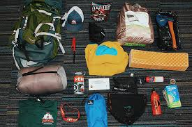

Tips on How to Pack Like a Pro

Master the art of packing with these 20 tips:
- Make a List: Write down everything you need to bring to avoid forgetting items.
- Roll Your Clothes: Rolling clothes saves space and reduces wrinkles.
- Use Packing Cubes: Packing cubes help keep your luggage organized.
- Pack Dual-Purpose Items: Items that serve multiple purposes save space.
- Wear Bulkiest Items: Wear your heaviest items to save luggage space.
- Limit Shoes: Bring versatile shoes that go with multiple outfits.
- Minimize Toiletries: Use travel-sized toiletries or buy them at your destination.
- Pack a First Aid Kit: Bring a small kit for minor injuries.
- Keep Electronics Together: Use a separate bag for electronics and chargers.
- Use Ziploc Bags: Great for separating items and preventing leaks.
- Bring a Laundry Bag: Keep dirty clothes separate from clean ones.
- Pack an Extra Bag: An extra foldable bag can be useful for souvenirs.
- Label Your Luggage: Use tags or labels to identify your bags easily.
- Pack Smart: Use every bit of space efficiently.
- Prepare for Weather: Check the weather forecast and pack accordingly.
- Use a Luggage Scale: Avoid overweight fees by weighing your luggage.
- Keep Important Items in Carry-On: Essentials should be in your carry-on bag.
- Organize Documents: Keep travel documents organized and accessible.
- Bring a Travel Pillow: For comfortable long flights or bus rides.
- Stay Hydrated: Bring a reusable water bottle to stay hydrated on the go.
Back to Blogs